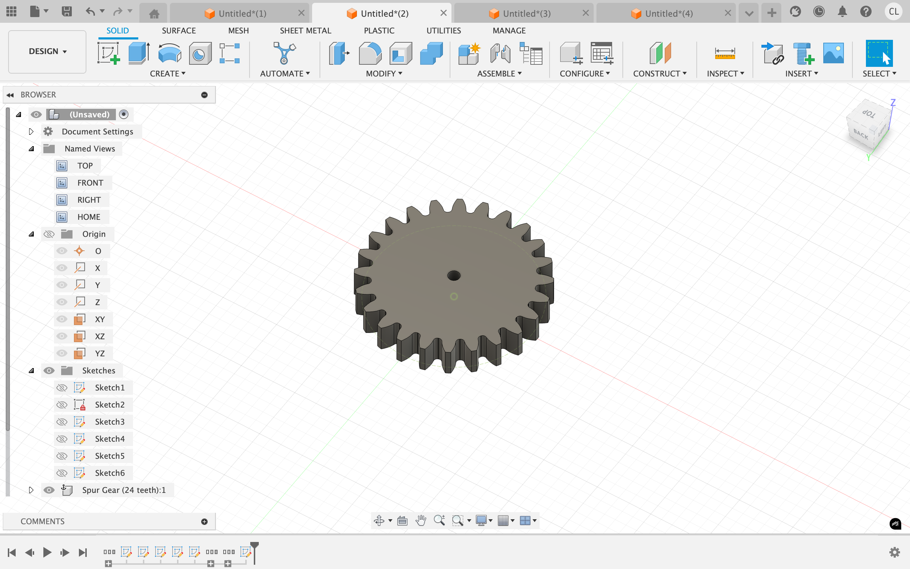
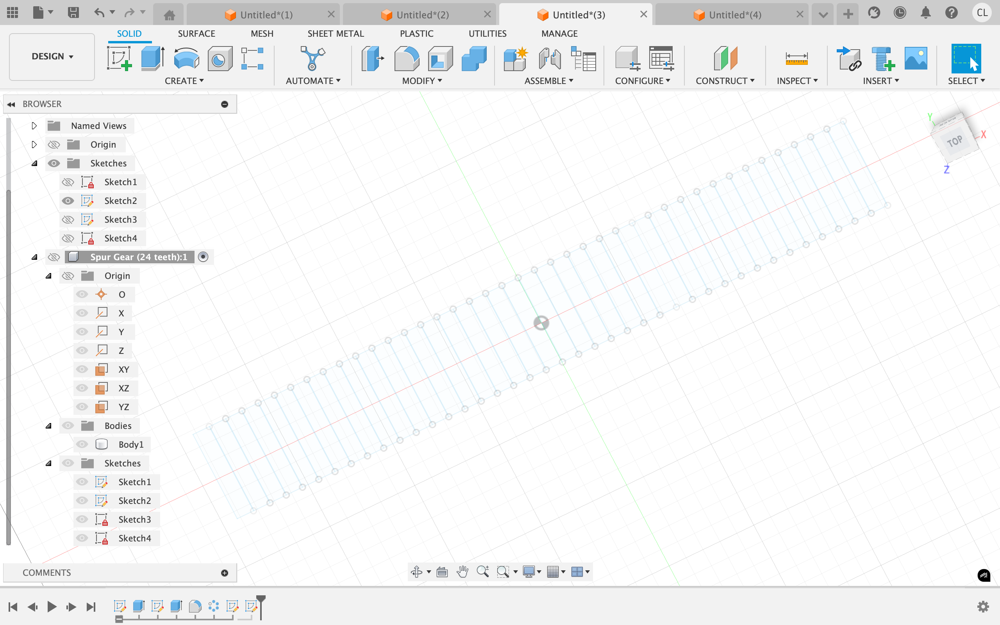
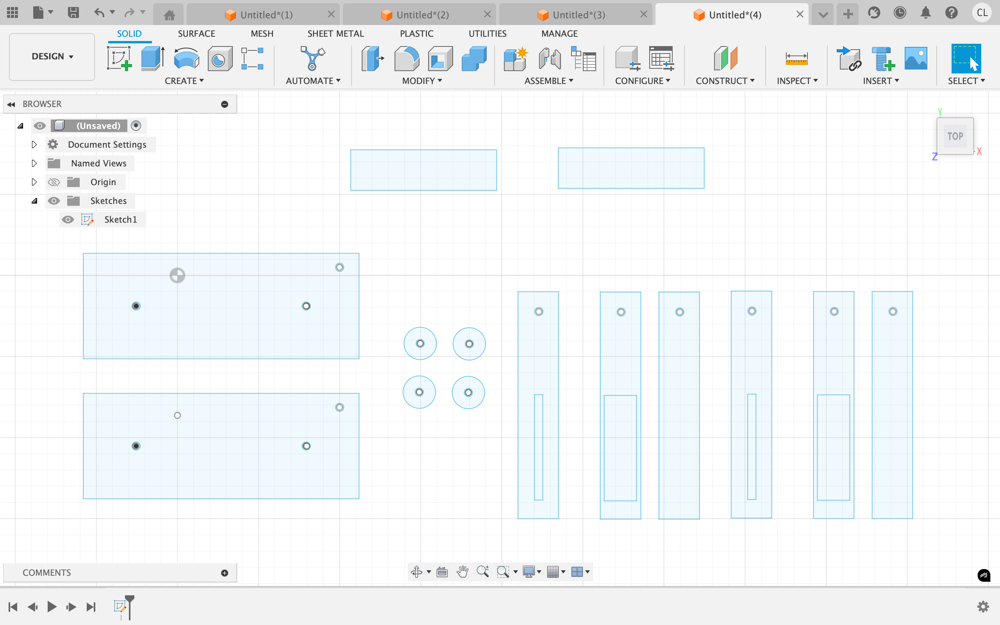

<div class="textcontainer">
<p class="margin"> </p>
<h3>Week 3: Hand Tools and Fabrication</h3>
<h4>Kinetic Sculpture</h4>
<h4><b><u>Treadmill</b></h4></u>
<p class = "margin"></p>
For my project, I made a scaled down version of a treadmill that has a button that could be turned on or off. With 2 motors, one controlling the treadmill while the other controls the steepness of the treamill.
<p class = "margin"></p>
<h4><b><u>Modeling</b></h4></u>
<p class = "margin"></p>
I used spurGear on fusion 360 to create 6 idential gears that are hidden in the treadmill. A motor is connected to the piece in the middle to control the whole treadmill.
<p class = "margin"></p>

<p class = "margin"></p>
I added two pieces of wood on the side for the gear and treadmill to keep its structure. I used cardboard specifically for the treadmill, with lines that are scored in order for the treadmill to spin and bend easily.
<p class = "margin"></p>


</div>